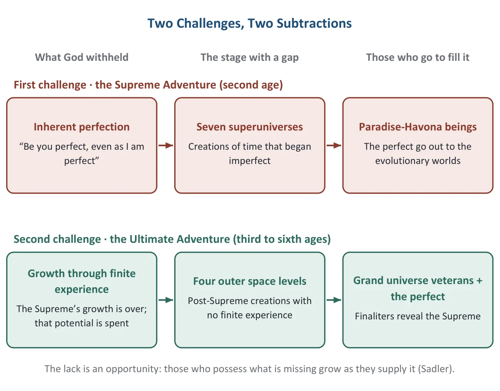

A segunda antítese: o desafio do espaço exterior
Original: A História Absonita, capítulo VII, A segunda antítese (pp. 75–83)
NESTE CAPÍTULO
Uma vez que o Ser Supremo termina de crescer, o universo-mestre passa ao que se pode chamar de idades pós-Supremas. Ao longo de quatro idades, da terceira à sexta, a primeira Trindade experiencial organiza os quatro níveis do espaço exterior, e, ao final desse longo trabalho, aparece Deus, o Último. Sadler sustenta que às criações do espaço exterior faltará apenas uma coisa: a experiência finita. Essa falta se torna uma oportunidade para os seres que cresceram no grande universo, e a saída deles ao encontro dessa necessidade é o que ele chama de Aventura Última. Neste capítulo, Sadler põe números na administração do Nível Espacial Primário, antevê uma nova parceria de Deidade dual na qual o Espírito se une ao Supremo, e considera se a Ultimidade poderia emergir em várias etapas em vez de toda de uma vez.
1. As idades pós-Supremas (orig., p. 75)
Sadler propõe uma nova maneira de nomear as idades, tomando o Ser Supremo como ponto de referência. A atual segunda idade do universo é a era em que o Supremo está evoluindo e crescendo. Por essa contagem, a primeira idade, que veio antes, é uma idade pré-Suprema, e as idades do espaço exterior que se seguem à conclusão do crescimento do Supremo podem ser chamadas de idades pós-Supremas.
As idades pós-Supremas são quatro, a saber, as idades da terceira à sexta. Cada uma corresponde a um nível do espaço exterior. O que as une, no resumo de Sadler, é que, ao longo de todas as quatro, a primeira Trindade experiencial trabalha em direção a três metas:
- a unificação da própria primeira Trindade experiencial
- a conclusão do universo-mestre
- a emergência de Deus, o Último
O Livro de Urântia também diz que o aparecimento do Supremo abrirá caminho para o pleno funcionamento dessa Trindade.
Esse acontecimento certamente conduzirá ao funcionamento completo da primeira Trindade experiencial —formada na união dos Criadores Supremos, do Ser Supremo e dos Arquitetos do Universo-Mestre. Essa Trindade está destinada a efetivar o prosseguimento da integração evolucionária da criação mestra.106:3.2
São as idades em que as forças e os agentes criadores do Paraíso se estendem em grande escala para dentro do espaço exterior. Ao lado deles vão administradores do Paraíso e de Havona, juntamente com todos os “veteranos” experienciais que passaram pela idade evolucionária dos superuniversos. Sadler encontra grande significado nessa parceria. Pela primeira vez, os perfeitos e os perfeccionados formam uma única equipe e assumem uma tarefa comum. Ele chama esse empreendimento conjunto de Aventura Última, um nome pensado para fazer par com a Aventura Suprema encontrada em capítulos anteriores.
2. A necessidade citoplasmática amplia a função nuclear (orig., pp. 76–77)
Duas Deidades experienciais refinam os potenciais
A partir de que os criadores criam? Sadler retorna a uma idéia do capítulo anterior. A matéria-prima da criação é o potencial, a possibilidade ainda não realizada, que flui dos três Absolutos. Mas, porque esses potenciais são absolutos, eles não têm utilidade direta para criadores que trabalham em níveis finitos. Algo precisa primeiro prepará-los.
No relato de Sadler, a preparação acontece em duas etapas. O Último, que está em contato imediato com o nível absoluto, primeiro organiza o potencial absoluto de modo que ele se torne responsivo à ação criadora; o Supremo, então, o refina ainda mais, ajustando-o aos níveis finitos. Ambos, diz ele, já fazem isso muito antes da sua plena emergência. Pode-se compará-lo ao minério extraído de uma mina: uma fundição o transforma em metal, e uma oficina depois lamina esse metal em chapas utilizáveis. Os criadores só conseguem “criar” porque o material foi preparado dessa maneira. O refino em duas etapas é o modelo interpretativo de Sadler. O Livro de Urântia diz que os fenômenos absonitos são atos da Ultimidade da Deidade, mas não divide o processo em etapas como uma linha de produção.
Sempre que o tempo e o espaço são transcendidos, não importando em que parte do universo-mestre, esse fenômeno do absonito é um ato da Ultimidade da Deidade.0:1.12
O potencial finito se esgota
Na passagem da segunda para a terceira idade, uma mudança importante atinge o potencial disponível para a criação e o crescimento. Como o Supremo está crescendo agora, os seres criados ou em evolução nesta idade podem partilhar desse crescimento. Quando a idade se encerra, porém, encerra-se também o crescimento do Supremo, e o potencial para a experiência finita se esgota. Sendo finito, ele pode ser exaurido.
Sadler ilustra isso comparando dois Espíritos Criativos. Um Espírito Criativo que serve hoje em um universo local pode gerar serafins capazes de crescer por meio da experiência finita, porque ela se vale do potencial do Supremo em crescimento. Um Espírito Criativo que servirá no Nível Espacial Primário na terceira idade será idêntico em natureza à sua irmã mais velha, mas nunca produzirá tais serafins, pois o material já não existirá. Ela trabalhará com potencial pós-Supremo, provavelmente subabsoluto em vez de finito, e os seus filhos serão seres desprovidos de qualquer capacidade inata para a experiência finita.
Uma criação à qual falta uma coisa
Como serão os universos do espaço exterior, e quem serão os seus nativos? Sadler admite que não pode responder de modo positivo, uma vez que tais assuntos estão totalmente além do alcance da nossa experiência. Assim como os nativos de Havona não podiam nos imaginar até encontrarem os primeiros peregrinos ascendentes, também nós não conseguimos visualizar os seres do espaço exterior. Uma coisa, porém, é certa. Em nenhum lugar do espaço exterior, e em nenhum dos seus nativos, haverá experiência finita. Isso não é um palpite de Sadler; é O Livro de Urântia que o prevê.
Esse universo virá à existência sob uma limitação experiencial formidável: será privado da participação na evolução do Supremo Todo-Poderoso.31:10.11
A falta é a nossa oportunidade
É exatamente nessa falta que Sadler situa o nosso lugar. A própria qualidade que falta no espaço exterior é uma que recebemos em abundância. Somos filhos do Supremo. A experiência finita está no cerne da natureza de todo ser experiencial e evolucionário nascido no grande universo. À medida que o Supremo cresceu em nós, nós crescemos Nele, e assim nos assemelhamos ao Supremo, o Deus da experiência finita.
Mesmo como finalitores ainda estaremos inacabados. O Livro de Urântia descreve os finalitores como espíritos da sexta etapa que alcançaram o destino apenas até onde a idade presente permite.
Eles alcançaram o limite atual da perfeição da criatura, mas não a finalidade do serviço da criatura. Eles experienciaram a plenitude da adoração da Deidade, mas não a finalidade da realização da Deidade experiencial.31:3.6
Sadler espera que essas metas restantes fiquem ao nosso alcance por meio do serviço no espaço exterior. Ao levar a experiência finita a lugares que não a têm, e ao preencher essa lacuna, nós mesmos ultrapassaremos os nossos limites atuais. Isso refaz o caminho dos nossos predecessores do Paraíso e de Havona, que também superaram os seus próprios limites ao saírem para servir em superuniversos aos quais faltava a perfeição divina.
Sadler e o texto: as três metas não alcançadas dos finalitores
Sadler enumera as metas ainda não alcançadas pelos finalitores como o status último da criatura, a finalidade do serviço da criatura e a finalidade da realização da Deidade experiencial. O texto formula o primeiro item como “finalidade do último status do espírito” [31:3.6]. O sentido é próximo, mas Sadler parafraseou. O texto também diz que nem mesmo os finalitores encontraram ainda o Ser Supremo, nem é provável que o encontrem antes de se tornarem espíritos da sétima etapa e de o Supremo estar efetivamente funcionando nos universos exteriores [56:6.4]. A incompletude dos finalitores é uma afirmação do texto antes de ser uma interpretação de Sadler.
3. O desafio da Aventura Última (orig., pp. 77–78)
Dois desafios, duas subtrações
Na alvorada do tempo, Deus colocou diante dos cidadãos da criação estabelecida e eterna a imperfeição embutida dos sete superuniversos. Os seres perfeitos do Paraíso-Havona responderam a esse desafio aventurando-se nas incertezas do nível espacial dos superuniversos, ainda não organizado; essa foi a Aventura Suprema. No mesmo momento, Deus ofereceu às criaturas imperfeitas o convite: “Sede perfeitos, assim como Eu sou perfeito”, e as forças e as personalidades da perfeição levaram esse desafio até os mundos evolucionários. Sadler acrescenta que a perfeição infinita de Deus se tornou algo que podíamos compreender quando Jesus a humanizou.
Agora Deus desafia toda a criação uma segunda vez. Sadler compara os dois desafios como atos de subtração. No primeiro, Deus reteve a perfeição inata dos novos superuniversos, e a tarefa resultante foi tornar perfeito o imperfeito por meio do crescimento e da experiência no tempo e no espaço. No segundo, Deus retém algo novamente: desta vez, a possibilidade de crescimento por meio da experiência finita. Todo cidadão do grande universo é chamado a suprir essa falta nas criações exteriores.

Reveladores do Supremo
Sadler acredita que, até lá, teremos verdadeiramente nos tornado filhos do Ser Supremo e, assim, seremos capazes de enfrentar esse desafio; até as nossas mentes estarão ligadas à mente do Supremo. A sua esperança é que, assim como Jesus revelou o Pai Universal, nós revelemos Deus, o Supremo, às novas criaturas dos universos exteriores. O Livro de Urântia descreve a experiência pós-finalitora desta maneira.
2. A experiência pós-finalitora, ou reveladora de Deus, que é a experiência da expansão criadora da compreensão-realização de si próprio por meio da revelação do Ser Supremo experiencial, para as inteligências buscadoras de Deus e que ainda não atingiram os níveis divinos de semelhança com Deus.112:2.18
Sadler nos julga bem preparados para a tarefa, uma vez que três coisas estarão fundidas em nós: a divindade outorgada pelo Ajustador, a sabedoria experiencial duramente conquistada na subida ao Paraíso e um longo serviço nos superuniversos em crescimento. Lá fora enfrentaremos novos problemas de pura vastidão, situações imprevisíveis e coisas que não conseguimos explicar. Como novas criaturas na alvorada de uma nova criação, voltaremos a ser jovens, cresceremos outra vez e conheceremos mais uma vez a súbita ampliação de todos os horizontes.
Um desafio de amplitude e de profundidade
Sadler ressalta que esse desafio tem profundidade, além de amplitude. Diante de nós estão não só o tempo, o espaço e a massa imensos dos universos exteriores, mas também uma busca renovada do Pai Universal. Tendo encontrado o Pai como Supremo, poderemos agora encontrá-Lo como Último? O Livro de Urântia pinta o mesmo quadro.
Certa, segura e inexoravelmente, o enigma da Deidade emergente de Deus, o Último, desafiará os cidadãos perfeccionados dos universos estabelecidos, exatamente como os seus antepassados de luta evolucionária, certa vez, foram desafiados pela busca de Deus, o Supremo.117:7.17
4. A administração do Nível Espacial Primário (orig., pp. 79–81)
Os fatos conhecidos
Sadler agora restringe o foco à terceira idade, a primeira das idades pós-Supremas, e à organização do Nível Espacial Primário. Ele parte de alguns fatos fornecidos por O Livro de Urântia. Setenta mil vastas agregações de matéria estão se reunindo ali, cada uma delas já maior do que qualquer superuniverso.
…onde já estamos sendo capazes de identificar agrupamentos de, pelo menos, setenta mil agregações de matéria, cada uma delas maior do que qualquer um dos superuniversos atuais.31:10.19
Além disso, o texto atribui setenta Arquitetos Mestres ao Nível Espacial Primário [31:9.6]. Daqui em diante, a aritmética é de Sadler. Dividindo setenta mil agregações entre setenta Arquitetos, cada Arquiteto fica com cerca de mil.
Sete Espíritos Mestres e setenta mil galáxias
Sadler encontra bons motivos para crer que os Sete Espíritos Mestres assumirão setores do espaço exterior contínuos com as suas atuais jurisdições superuniversais. Se assim for, cada Espírito Mestre supervisiona um sétimo das setenta mil galáxias, isto é, dez mil delas, juntamente com dez Arquitetos. Cada uma dessas galáxias é uma espécie de “super-superuniverso”, maior do que qualquer superuniverso.
Se cada Espírito Mestre moldar as tendências ambientais de um setor do espaço exterior assim como agora molda as do seu próprio superuniverso, então o Nível Espacial Primário repetiria o padrão dos sete superuniversos em uma escala muito mais grandiosa. Sete ambientes, semelhante ao Pai, semelhante ao Filho, semelhante ao Espírito, semelhante ao Pai-Filho, semelhante ao Pai-Espírito, semelhante ao Filho-Espírito e semelhante ao Pai-Filho-Espírito, deixariam uma marca indelével nos nativos de cada setor. Sadler acha esse quadro confortável, mas simples demais, porque os Trios Criativos Filho-Espírito complicam consideravelmente as coisas quando são levados em conta.
Trios Criativos Filho-Espírito e quarenta e nove ambientes
Como vimos no capítulo 7, Sadler raciocinou que os setecentos mil pares de Filhos Criadores e Espíritos Criativos dos universos locais, ao final da segunda idade, trinitarizariam Criadores Associados e se tornariam assim Trios Criativos Filho-Espírito. Se esse raciocínio se sustentar, exatamente setecentos mil Trios serão designados para o espaço exterior.
Sadler acrescenta mais um ponto: os Trios não serão todos iguais. Cada Espírito Criativo traz a semelhança do Espírito Mestre do superuniverso em que serviu; há, portanto, sete tipos de Espírito Criativo e, por conseguinte, sete tipos de Trio, cem mil de cada. Como as correntes do universo-mestre parecem favorecer a variedade em vez da uniformidade, ele espera que todos os sete tipos estejam distribuídos de modo uniforme pelo setor de cada Espírito Mestre. Se cem mil Trios dividirem as dez mil galáxias do setor do primeiro Espírito Mestre, cada Trio governará cerca de um décimo de uma galáxia. Só isso já é muito maior do que um décimo de um superuniverso com os seus cem mil universos locais.

Uma vez que cada Trio também moldará o ambiente do seu próprio domínio, surgem sete tendências ambientais dentro do setor de um único Espírito Mestre, e, nos sete setores, elas somam 7 × 7 = 49. Se os sete superuniversos produzem sete tipos de criatura e de Espírito Criativo, o Nível Espacial Primário produziria quarenta e nove tipos distintos. Sadler espera que essa “potência de sete” continue no nível seguinte, resultando em 343 no Nível Espacial Secundário. Como apoio, ele observa que o número de Arquitetos Mestres de cada nível sucessivo se multiplica por sete exatamente dessa maneira [31:9.5–9].
| Nível espacial | Arquitetos Mestres designados | Tipos ambientais estimados por Sadler |
|---|---|---|
| Sete superuniversos | 7 | 7 |
| Nível Espacial Primário | 70 | 49 (7×7) |
| Nível Espacial Secundário | 490 | 343 (7×7×7) |
| Nível Espacial Terciário | 3.430 | espera-se que continue a multiplicar-se por sete |
| Nível Espacial Quaternário | 24.010 | espera-se que continue a multiplicar-se por sete |
Filhos do Universo e Espíritos do Universo da terceira idade
Por fim, Sadler volta-se para o número de Filhos Criadores. O Livro de Urântia diz que já existem mais de setecentos mil deles, e que nada foi revelado sobre o destino dos que excedem esse número.
Notamos, ademais, que o número constantemente crescente de Filhos Criadores excede já o número estacionário de Uniões dos Dias. Contudo, no que concerne à quantidade dos Michaéis, além dos setecentos mil, nunca fomos informados de nada.21:1.4
Como há exatamente setecentos mil universos locais, Sadler infere que os Filhos do Universo e os Espíritos do Universo excedentes serão enviados para organizar universos no espaço exterior. O Nível Espacial Primário veria então duas ou três classes de Filhos do Universo e Espíritos do Universo em atividade. Ele supõe que os Filhos e Espíritos mais jovens servirão sob a jurisdição dos Trios Criativos, de modo muito semelhante ao modo como os governantes dos setores maiores de um superuniverso se relacionam hoje com os governantes dos universos locais. O seu número, sugere ele, poderia chegar a dez mil vezes o dos que serviram nos sete superuniversos.
5. O Espírito e o Supremo: Deidade dual do espaço exterior (orig., pp. 81–82)
Uma parceria condutora para cada idade
Sadler sustenta que cada idade do universo tem a sua própria parceria condutora de Deidade dual. Na primeira idade, conduziu o Pai-Filho; na segunda, o Filho-Espírito dos universos locais. Para as idades posteriores à emergência do Supremo, ele antevê um novo par ocupando esse lugar: uma parceria Espírito-Supremo.
| Idade | Parceria condutora | Resultado |
|---|---|---|
| Primeira idade (Havona) | Pai-Filho | Personalização do Espírito Infinito; formação da Trindade do Paraíso |
| Segunda idade (superuniversos) | Filho-Espírito (Filho Criador e Espírito Criativo) | 700.000 Criadores Associados; Trios Criativos Filho-Espírito (conjectura de Sadler) |
| Da terceira à sexta idade (espaço exterior) | Espírito-Supremo | Imprevisível |
A função do Supremo no espaço exterior
O Livro de Urântia fala de três funções do Ser Supremo. No universo central Ele funciona como uma personalidade espiritual, como uma personalidade de poder no grande universo, e a Sua terceira função, no universo-mestre, ainda está latente.
A função terciária do Supremo, no universo-mestre, é atualmente latente, existindo apenas como um potencial desconhecido de mente. Ninguém sabe o que esse terceiro desenvolvimento do Ser Supremo irá revelar.116:0.5
O texto prossegue relatando que alguns acreditam que o Supremo se expandirá em poder como o Todo-Super-Poderoso dos universos exteriores. Sadler se recusa a escolher entre “Todo-Super-Poderoso” e “potencial de mente”; ele considera ambos prováveis. Em qualquer caso, o Supremo exercerá uma influência direta e ativa sobre os universos exteriores e trabalhará lado a lado com o Espírito.
Onde a parceria Espírito-Supremo toma forma
Os Sete Espíritos Mestres são os que distribuem o Espírito Infinito aos universos além de Havona. Sadler espera, portanto, que a parceria Espírito-Supremo se forme principalmente como um vínculo que une o Supremo aos Espíritos Mestres. Isso não significa que o Supremo deixe de cooperar com o Espírito Infinito ou rompa as relações com os Espíritos Criativos. Quanto ao que a parceria produzirá, Sadler se dá por vencido. A parceria Pai-Filho personalizou o Espírito Infinito e conduziu à Trindade do Paraíso; a parceria Filho-Espírito pode dar origem a Criadores Associados. Mas, para o resultado da parceria Espírito-Supremo, diz o próprio Sadler, O Livro de Urântia não oferece base alguma para previsão.
6. Etapas na emergência do Último (orig., pp. 82–83)
Até este ponto, Sadler tratou os quatro níveis do espaço exterior e as suas quatro idades em conjunto, como um único bloco. Isso é, de modo geral, correto, mas, em um aspecto, os quatro precisam ser examinados separadamente: a emergência de Deus, o Último.
O Ser Supremo emerge como resultado do que acontece em uma idade e em um nível espacial. A Ultimidade, ao contrário, emerge como resultado do crescimento criador completado ao longo de cinco idades e cinco níveis espaciais. Segue-se que a emergência do Último não precisa acontecer de uma só vez; ela pode desdobrar-se em várias etapas. Por exemplo, a soberania do Último poderia ser estabelecida no Nível Espacial Primário antes que o Nível Espacial Secundário se abrisse. A soberania última seria então um fato no primeiro nível, enquanto permaneceria não realizada no segundo, algo que nunca ocorreu enquanto o Supremo estava evoluindo. A mesma relação poderia repetir-se entre o segundo e o terceiro níveis.

Sadler sugere assim que a primeira Trindade experiencial pode ser unificada em quatro etapas, e que Deus, o Último, pode igualmente emergir em quatro. O Livro de Urântia diz apenas que a emergência completa do Último implica a conclusão da criação mestra [106:4.2]. A emergência em etapas é a leitura que Sadler faz dessa afirmação, disposta em seqüência temporal.
Pontos-chave
- Tomando o Ser Supremo como referência, Sadler divide as idades em pré-Suprema (primeira), Suprema (segunda) e pós-Supremas (da terceira à sexta). Nas idades pós-Supremas, a primeira Trindade experiencial trabalha em direção a três fins: a sua própria unificação, um universo-mestre concluído e o aparecimento de Deus, o Último.
- Na interpretação de Sadler, o potencial absoluto, a matéria-prima da criação, é refinado em etapas pelo Último e depois pelo Supremo. Quando termina o crescimento do Supremo, o potencial para a experiência finita se esgota.
- O Livro de Urântia diz que os universos exteriores virão a existir privados da experiência finita, isto é, da participação na evolução do Supremo. Sadler lê essa falta como uma oportunidade para os seres do grande universo.
- No primeiro desafio, Deus reteve a perfeição; no segundo, Ele retém o crescimento por meio da experiência finita. Os perfeitos e os perfeccionados partindo juntos: isso é a Aventura Última.
- As setenta mil agregações e os setenta Arquitetos são números do texto; dez mil galáxias por Espírito Mestre, um décimo de galáxia por Trio e quarenta e nove ambientes são cálculos de Sadler.
- Sadler espera que a parceria condutora de Deidade dual passe do Pai-Filho, pelo Filho-Espírito, ao Espírito-Supremo, mas não faz previsão alguma sobre o seu resultado.
- Sadler infere que o Último pode emergir em etapas ao longo dos quatro níveis do espaço exterior.